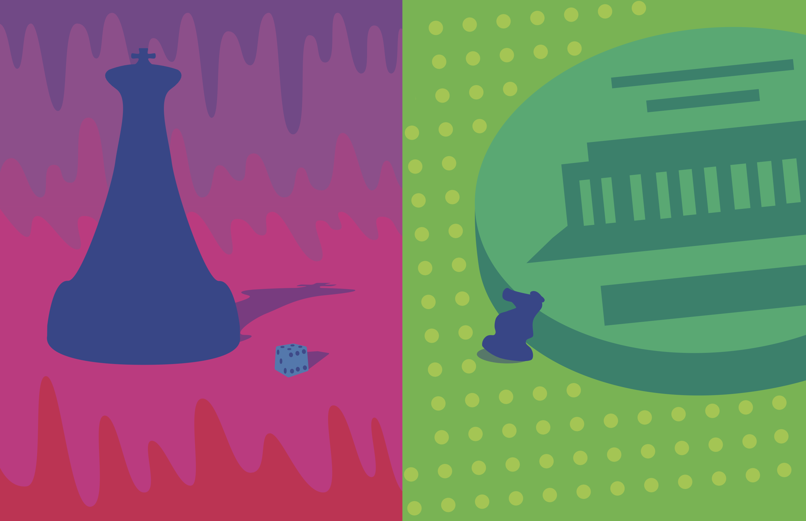
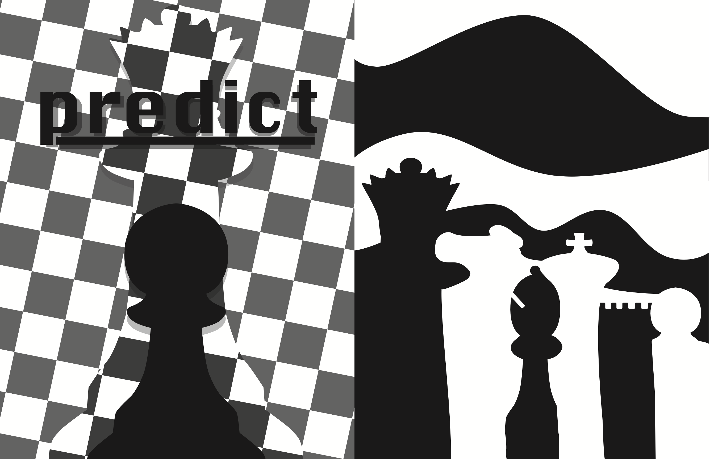
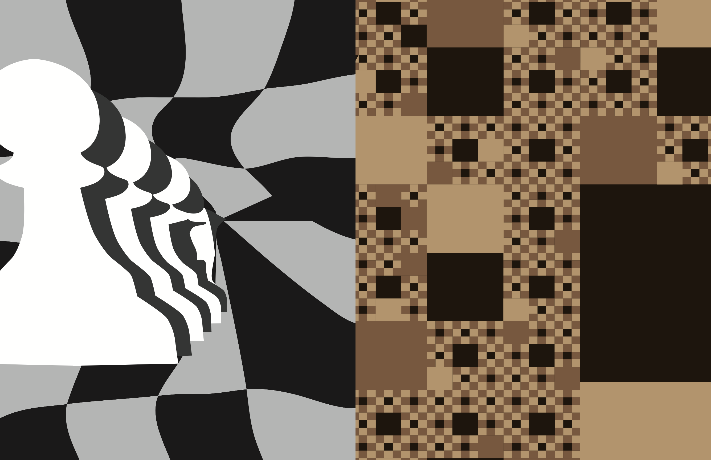
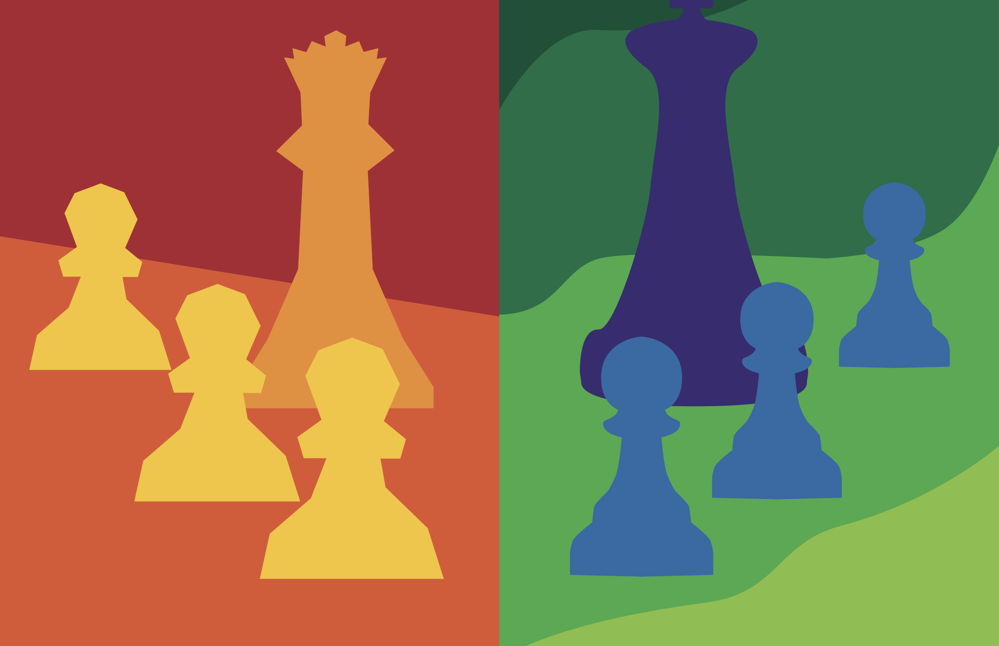
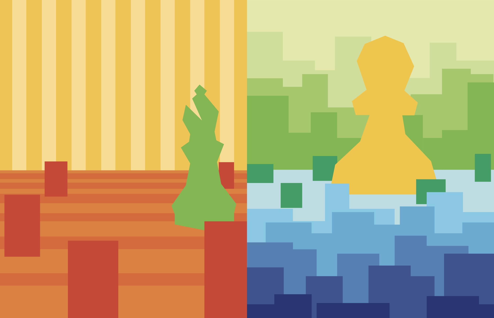
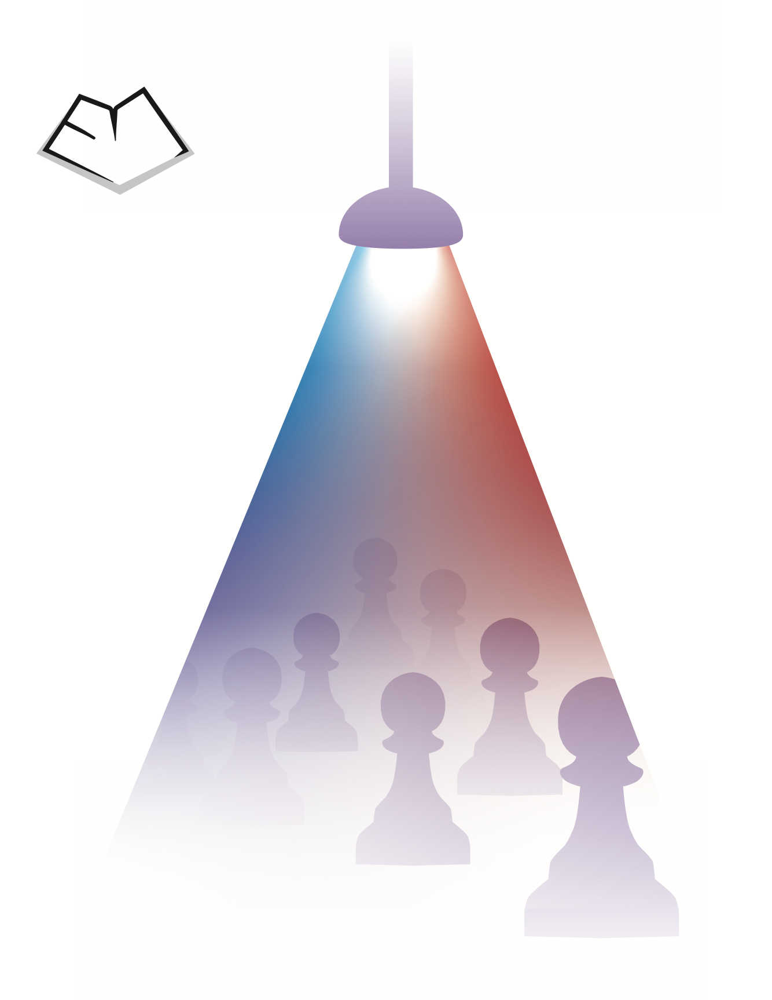

the entirety of graphic design 1 was spent making a booklet around a thing of your choice, I chose chess pieces. The goal was to learn all the basics of design, and it definitely helped me learn good techniques an practices that I could build on





